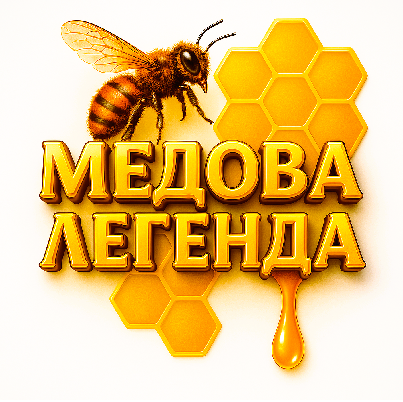

Про нас
Медова Легенда — це молода українська компанія, яка з любов’ю виготовляє натуральний мед та медові пасти з фітодобавками. Ми працюємо на заході України, у мальовничій Івано-Франківській області, де природа дарує найкращі дари для здоров’я та натхнення.
Наш мед — це справжній український польовий, квітковий та різнотрав’я мед, зібраний на чистих просторах Прикарпаття. Для наших паст ми використовуємо лише натуральні інгредієнти: мед, зібраний на українських пасіках, та відбірні українські горіхи. Жодних штучних домішок, цукру чи консервантів — тільки користь і природний смак.
Ми віримо, що натуральний мед і горіхи — це джерело енергії, імунітету та гарного настрою для кожної родини. Наша місія — зробити український мед доступним, якісним і сучасним продуктом для всіх, хто цінує здоровий спосіб життя.
Дякуємо, що обираєте Медову Легенду — справжній смак і користь української природи!
Ми знаходимося:
Івано-Франківська область, Україна